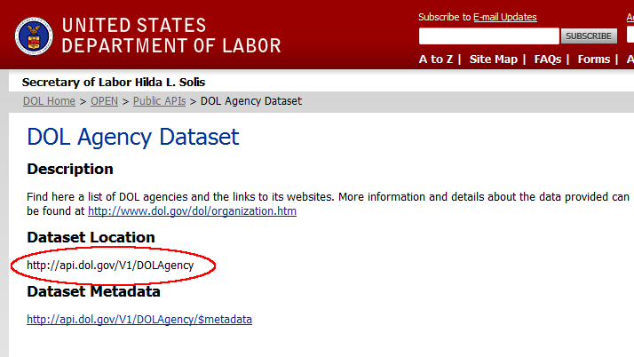
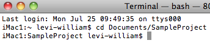
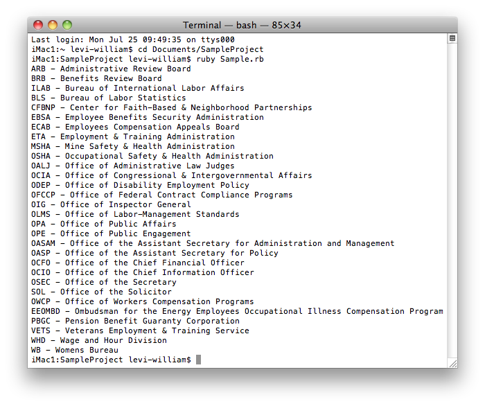
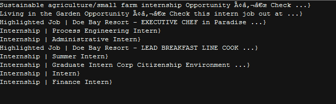

Ruby Government Data SDK Sample
Overview
This sample will provide the steps to create a simple Ruby application that can consume GOV Data.
Following these steps in order will allow your application to operate correctly.
Download this project |
Download project for Service Operation.
This solution was built using:
Create a New Project
Create a project folder for this sample.
Create a new text document using any text editor and save it as GOVDataExample.rb in the project folder.
Add SDK to Project
Copy the SDK file into the project folder. You can get this from one this GitHub Repository.
Ensure that you have installed the
json
and ruby-hmac gems.
MACHINE:~ user$ gem install json MACHINE:~ user$ gem install ruby-hmac
Locate the Dataset Path
Each Dataset has a Dataset Location path that gives the URL that will be needed to reach the Dataset on the API. For this sample please see the one circled in red (http://api.dol.gov/V1/DOLAgency).

For the DOL Service Operation sample please use http://api.dol.gov/V1/SummerJobs
Implementing the Government Data Request
Using This SDK With APIs From Other Federal Agencies
This sample project uses DOL's API. Some federal APIs' URLs are structured differently. For example, let's look at http://business.usa.gov/api/article/xml
- API_LOGIN = ""
- API_KEY = ""
- SHARED_SECRET = ""
- API_HOST = "http://business.usa.gov"
- API_URI = "/api"
- API_DATA = "/article/xml"
Alternatively, let's look at the Census Bureau, which uses an API key. For example, http://api.census.gov/data/2010/acs5?key={your key}&get=B02001_001E,NAME&for=state:06,36
- API_LOGIN = ""
- API_KEY = "key={your key}"
- API_SECRET = ""
- API_Host = "http://api.census.gov"
- API_URI = "/data"
- API_DATA = "/2010/sf1"
The GOVDataSDK.rb file handles everything required for submitting data requests to the Department of Labor and external Government Entity API. We will need the SDK classes in that file so we add them to GOVDataExample.rb with a require statement.
require './GOVDataSDK'
In order to submit data requests, we will need to create two objects; an instance of GOV::DataContext, to hold various information about our data request, and an instance of GOV::DataRequest, to handle the submission of the request.
The API_HOST,API_KEY,APISECRET, API_DATA and API_URI constants work for all government entities if an option is not used in your government entity class call simply leave it blank and only use the required variables for that government entity.
When calling the department of labor use the call_api and for all external government entities use the call_ext_api method call
#If one of the constants below does not have a value for the government entity you are calling simply leave it blank or empty. API_HOST = 'http://api.dol.gov' API_KEY = 'your-token' API_SECRET = 'your-shared-secret' API_DATA = 'DOLAgency/Agencies' API_URI = 'V1' context = GOV::DataContext.new API_HOST, API_KEY, API_SECRET, API_LOGIN, API_DATA, API_URI request = GOV::DataRequest.new context
Configure Security
Secure logins are provided using the following code; we will need to insure that the GOV::DataContext instance is initialied with both an ApiKey and a SharedSecret. Replace "your-token" and "your-shared-secret" in GOV::DataContext.new with your Token and SharedSecret.
- The ApiKey corresponds to the Token identifier in your token list.
- The SharedSecret that is associated with that token.
Next, we need to call the methodGOV::DataRequest#call_api on the newly created GOV::DataRequest instance. This method submits the request to the API. The method argument represents the Dataset and table portion of the Data location path. The arguments argument represents additional information sent to the API to narrow down the data you wish to recieve.
For Standard DOL API datasets
request.call_api API_DATA, :select => ‘Agency,AgencyFullName’, :orderby => ‘AgencyFullName’
For DOL Service Operation (e.g. Summer Job Plus), we will change the value of API_DATA to 'SummerJobs/getJobsListing.'
#Each String type parameter must be surrounded in quotes in order to work correctly. #These quotes are tehn Url encoded and passed to the Service Operation. #Each parameter that is assigned null should be left blank request.call_api API_DATA, :format => '\'json\'', :query => '\'farm\'', :region => '', :locality => '', :skipcount => '1' do |results, error|
Additionally, we need to provide #call_api with a block to execute after the DOL API returns the data we requested.
For Standard DOL API datasets
request.call_api API_DATA, :select => ‘Agency,AgencyFullName’, :orderby => ‘AgencyFullName’ do |results, error|
#if the JSON is parsed
results.each do |n|
puts "#{n['Agency']} - #{n['AgencyFullName']}"
end
#end if the JSON is parsed
#if the JSON is not parsed
print results
#end if the JSON is not parsed
endFor DOL Service Operation (e.g. Summer Job Plus)
#Each String type parameter must be surrounded in quotes in order to work correctly.
#These quotes are tehn Url encoded and passed to the Service Operation.
#Each parameter that is assigned null should be left blank
request.call_api 'SummerJobs/getJobsListing', :format => '\'json\'', :query => '\'farm\'',
:region => '', :locality => '',
:skipcount => '1' do |results, error|
if error
puts error
else
Jobs = results['getJobsListing']
JobsListing = Jobs['items']
# results
JobsListing.each do |n|
puts "#{n['title']} - #{n['snippet']}"
end
end
endFinally, we need to tell Ruby to wait until the request finishes before closing. We do this by calling GOV::DataRequest#wait_until_finished on the GOV::DataRequest instance.
request.wait_until_finished
The finished code should look like this:
For Standard DOL API datasets :
#import the GOVDataSDK file into your sample project.
require './GOVDataSDK'
#Create a new object and call the extend data set.
API_HOST = 'http://api.dol.gov'
API_KEY = ''
API_SECRET = ''
API_DATA = 'DOLAgency/Agencies'
API_URI = 'V1'
context = GOV::DataContext.new API_HOST, API_KEY, API_SECRET, API_DATA, API_URI
request = GOV::DataRequest.new context
substitute the method and arguments as necessary.
request.call_api API_DATA, :select => 'Agency,AgencyFullName', :orderby => 'AgencyFullName' do |results, error|
if error
puts error
else
print "\nattempting to print the results\n"
#if the JSON is parsed
results.each do |n|
puts "#{n['Agency']} - #{n['AgencyFullName']}"
end
#end if the JSON is parsed
#if the JSON is not parsed
print results
#end if the JSON is not parsed
end
end
request.wait_until_finishedFor DOL Service Operation (e.g. Summer Job Plus) :
#import the GOVDataSDK file into your sample project.
require './GOVDataSDK'
#Create a new object and call the extend data set.
API_HOST = 'http://api.dol.gov'
API_KEY = ''
API_SECRET = ''
API_DATA = 'SummerJobs/getJobsListing'
API_URI = 'V1'
context = GOV::DataContext.new API_HOST, API_KEY, API_SECRET, API_DATA, API_URI
request = GOV::DataRequest.new context
#Make API call
request.call_api API_DATA, :format => '\'json\'', :query => '\'farm\'',
:region => '', :locality => '',
:skipcount => '1' do |results, error|
if error
puts error
else
Jobs = results['getJobsListing']
JobsListing = Jobs['items']
results
JobsListing.each do |n|
puts "#{n['title']} - #{n['snippet']}"
end
end
end
request.wait_until_finishedRun the Application
In order to run this application you will need to open a terminal window and navigate into your project folder.

Run the program with ruby GOVDataExample.rb and you should see a list of Agencies printed to the terminal.
For Standard DOL API datasets :

For DOL Service Operation (e.g. Summer Job Plus) :
